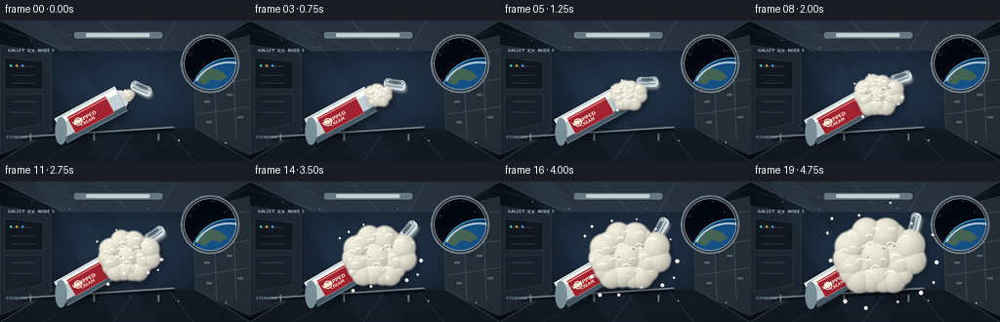
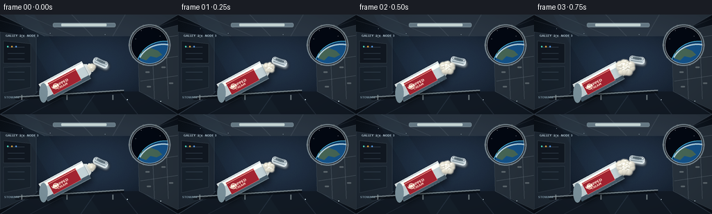

CODING AGENTS AS PIXEL WORLD MODELS
traex/GPT-5.6-Sol · mechanics_0006
点击播放 · 原生 RGB 像素
逐轮保存的候选
回放视频、检查图与代码变化。
每份候选均可单独播放。实际图片检查记录在下方工具轨迹中。
候选 01播放与检查图
点击播放 · 原生 RGB 像素


展开代码变化
--- 上一保存版本
+++ 本次保存版本
@@ -0,0 +1,364 @@
+"""Programmatic text-to-video render for the PixelWorld case.
+
+The scene is drawn at 3x resolution and downsampled for smooth, cinematic
+edges. It intentionally uses only local math, numpy, OpenCV, and Pillow.
+"""
+
+from pathlib import Path
+import math
+
+import cv2
+import numpy as np
+from PIL import Image, ImageDraw, ImageFont, ImageFilter
+
+import artifact_io
+
+
+W, H, N = 256, 144, 20
+SS = 3
+RW, RH = W * SS, H * SS
+ROOT = Path(__file__).resolve().parent
+RNG = np.random.default_rng(64117)
+
+
+def P(x, y):
+ return int(round(x * SS)), int(round(y * SS))
+
+
+def pts(seq):
+ return [P(x, y) for x, y in seq]
+
+
+def font(size, bold=False):
+ candidates = [
+ "/usr/share/fonts/truetype/dejavu/DejaVuSans-Bold.ttf" if bold else
+ "/usr/share/fonts/truetype/dejavu/DejaVuSans.ttf",
+ "/usr/share/fonts/truetype/liberation2/LiberationSans-Bold.ttf" if bold else
+ "/usr/share/fonts/truetype/liberation2/LiberationSans-Regular.ttf",
+ ]
+ for path in candidates:
+ try:
+ return ImageFont.truetype(path, size * SS)
+ except OSError:
+ pass
+ return ImageFont.load_default()
+
+
+def make_background():
+ """Station galley with a porthole, deep perspective, panels, and handrails."""
+ yy, xx = np.mgrid[0:RH, 0:RW] / SS
+ # Steel-blue cabin illumination with edge falloff.
+ glow = np.exp(-(((xx - 143) / 120) ** 2 + ((yy - 69) / 76) ** 2))
+ vignette = np.clip(1 - 0.30 * (((xx - 128) / 150) ** 2 + ((yy - 72) / 95) ** 2), .57, 1)
+ arr = np.empty((RH, RW, 3), np.float32)
+ arr[..., 0] = (14 + 19 * glow) * vignette
+ arr[..., 1] = (21 + 28 * glow) * vignette
+ arr[..., 2] = (31 + 38 * glow) * vignette
+ noise = RNG.normal(0, .85, (RH, RW, 1))
+ arr = np.clip(arr + noise, 0, 255).astype(np.uint8)
+ im = Image.fromarray(arr, "RGB")
+ d = ImageDraw.Draw(im, "RGBA")
+
+ # Receding ceiling and floor panels.
+ d.polygon(pts([(0, 0), (256, 0), (200, 31), (65, 31)]), fill=(45, 56, 68, 220))
+ d.polygon(pts([(0, 144), (256, 144), (202, 111), (55, 111)]), fill=(18, 26, 36, 245))
+ d.line(pts([(64, 31), (0, 0)]), fill=(115, 132, 145, 90), width=SS)
+ d.line(pts([(202, 31), (256, 0)]), fill=(115, 132, 145, 80), width=SS)
+ d.line(pts([(54, 111), (0, 144)]), fill=(91, 110, 128, 110), width=SS)
+ d.line(pts([(202, 111), (256, 144)]), fill=(91, 110, 128, 90), width=SS)
+ for x0, xt in [(-28, 76), (36, 107), (103, 133), (180, 162), (270, 195)]:
+ d.line(pts([(x0, 0), (xt, 31)]), fill=(130, 145, 156, 40), width=SS)
+ for x0, xt in [(-20, 72), (43, 106), (116, 139), (198, 172), (279, 202)]:
+ d.line(pts([(x0, 144), (xt, 111)]), fill=(104, 125, 143, 45), width=SS)
+
+ # Left equipment rack.
+ d.polygon(pts([(0, 25), (52, 33), (52, 114), (0, 137)]), fill=(30, 40, 51, 255), outline=(91, 107, 120, 170))
+ d.polygon(pts([(5, 38), (44, 42), (44, 70), (5, 70)]), fill=(17, 24, 33, 255), outline=(105, 120, 131, 145))
+ d.polygon(pts([(5, 76), (44, 75), (44, 105), (5, 113)]), fill=(24, 34, 44, 255), outline=(105, 120, 131, 120))
+ for y0 in (47, 56, 64, 83, 94):
+ d.line(pts([(11, y0), (35, y0)]), fill=(86, 106, 122, 100), width=SS)
+ for x, col in [(11, (84, 239, 208, 230)), (17, (252, 181, 66, 230)), (23, (101, 172, 255, 220))]:
+ d.ellipse((P(x - 1.1, 45)[0], P(43.9)[1] if False else P(x, 45)[1], P(x + 1.1, 47.2)[0], P(x, 47.2)[1]), fill=col)
+
+ # Right wall with modular lockers.
+ d.polygon(pts([(198, 30), (256, 15), (256, 138), (200, 111)]), fill=(38, 48, 58, 255), outline=(111, 124, 134, 130))
+ for y0 in (38, 68, 96):
+ d.line(pts([(202, y0), (256, y0 - 8)]), fill=(123, 135, 145, 100), width=SS)
+ for x0 in (218, 238):
+ d.line(pts([(x0, 28), (x0 + 4, 122)]), fill=(122, 135, 145, 75), width=SS)
+ for x, y in [(209, 82), (232, 75), (211, 103), (243, 98)]:
+ d.rounded_rectangle((P(x, y), P(x + 6, y + 2)), radius=SS, fill=(159, 168, 169, 110))
+
+ # Porthole rim, then Earth and stars clipped in the dark window.
+ cx, cy, rr = 215, 44, 27
+ d.ellipse((P(cx - rr - 3, cy - rr - 3), P(cx + rr + 3, cy + rr + 3)), fill=(17, 22, 28, 255), outline=(126, 141, 151, 220), width=2 * SS)
+ win = Image.new("RGBA", (RW, RH), (0, 0, 0, 0))
+ wd = ImageDraw.Draw(win, "RGBA")
+ wd.ellipse((P(cx - rr, cy - rr), P(cx + rr, cy + rr)), fill=(3, 8, 18, 255))
+ # Earth limb: a huge globe below/right of the circular window.
+ wd.ellipse((P(196, 38), P(278, 113)), fill=(12, 55, 96, 255), outline=(83, 199, 244, 240), width=SS)
+ wd.ellipse((P(199, 41), P(275, 110)), fill=(20, 81, 134, 255))
+ wd.polygon(pts([(203, 54), (216, 48), (227, 52), (233, 58), (225, 62), (216, 60), (210, 66), (202, 63)]), fill=(91, 132, 108, 180))
+ wd.polygon(pts([(224, 71), (237, 63), (249, 65), (253, 76), (239, 82), (229, 79)]), fill=(102, 144, 115, 170))
+ wd.arc((P(197, 42), P(272, 108)), 204, 318, fill=(207, 239, 255, 210), width=2 * SS)
+ for sx, sy in [(203, 23), (218, 20), (230, 31), (195, 35), (240, 20)]:
+ wd.ellipse((P(sx - .45, sy - .45), P(sx + .45, sy + .45)), fill=(220, 235, 255, 220))
+ # Clip every porthole element to the circle.
+ clip = Image.new("L", (RW, RH), 0)
+ ImageDraw.Draw(clip).ellipse((P(cx - rr, cy - rr), P(cx + rr, cy + rr)), fill=255)
+ clipped_alpha = np.minimum(np.asarray(win.getchannel("A")), np.asarray(clip)).astype(np.uint8)
+ win.putalpha(Image.fromarray(clipped_alpha))
+ im = Image.alpha_composite(im.convert("RGBA"), win).convert("RGB")
+ d = ImageDraw.Draw(im, "RGBA")
+ d.ellipse((P(cx - rr, cy - rr), P(cx + rr, cy + rr)), outline=(183, 197, 204, 185), width=SS)
+ for a in np.linspace(0, 2 * np.pi, 10, endpoint=False):
+ bx, by = cx + 29.2 * np.cos(a), cy + 29.2 * np.sin(a)
+ d.ellipse((P(bx - 1.1, by - 1.1), P(bx + 1.1, by + 1.1)), fill=(99, 110, 116, 255), outline=(205, 211, 211, 150))
+
+ # Cabin lights and rails.
+ d.rounded_rectangle((P(76, 12), P(166, 18)), radius=2 * SS, fill=(171, 200, 211, 120), outline=(210, 228, 232, 120))
+ d.rounded_rectangle((P(88, 13), P(153, 16.5)), radius=SS, fill=(230, 244, 239, 190))
+ d.line(pts([(22, 121), (178, 111)]), fill=(8, 12, 18, 170), width=5 * SS)
+ d.line(pts([(22, 119), (178, 109)]), fill=(150, 165, 170, 185), width=2 * SS)
+ for x in (31, 96, 162):
+ d.line(pts([(x, 116), (x, 123)]), fill=(145, 158, 162, 160), width=2 * SS)
+
+ # Tiny station labels, secondary to the action.
+ d.text(P(8, 28), "GALLEY ⢠NODE 3", font=font(4, True), fill=(179, 198, 210, 150))
+ d.text(P(6, 117), "STOWAGE", font=font(4, True), fill=(125, 150, 164, 125))
+ return im
+
+
+BACKGROUND = make_background()
+
+
+# Fixed directions make the same cauliflower structure expand smoothly.
+FOAM_SEEDS = []
+for ring, count in [(0.36, 9), (0.66, 13), (1.0, 18)]:
+ phase = RNG.uniform(0, 2 * np.pi)
+ for j in range(count):
+ angle = 2 * np.pi * j / count + phase + RNG.normal(0, .10)
+ FOAM_SEEDS.append((angle, ring * RNG.uniform(.82, 1.16), RNG.uniform(.72, 1.28), RNG.uniform(-.02, .09)))
+
+DROPS = []
+for j in range(14):
+ a = 2 * np.pi * j / 14 + RNG.uniform(-.18, .18)
+ DROPS.append((a, RNG.uniform(30, 50), RNG.uniform(1.0, 2.25), RNG.uniform(.18, .68)))
+
+
+def draw_lid(im, t, origin):
+ """Detached cap drifting and tumbling upward-right in microgravity."""
+ # It starts beside the opening and coasts away without falling.
+ x = origin[0] + 13 + 25 * t
+ y = origin[1] - 6 - 28 * t
+ ang = -24 + 100 * t
+ lid = Image.new("RGBA", P(29, 18), (0, 0, 0, 0))
+ ld = ImageDraw.Draw(lid, "RGBA")
+ ld.rounded_rectangle((P(3, 4), P(25, 14)), radius=4 * SS, fill=(192, 205, 211, 255), outline=(246, 251, 250, 220), width=SS)
+ ld.ellipse((P(4, 4), P(24, 9)), fill=(224, 232, 232, 255), outline=(116, 134, 145, 230), width=SS)
+ ld.ellipse((P(7, 5.2), P(21, 8)), fill=(91, 108, 117, 230))
+ ld.line(pts([(6, 11), (22, 11)]), fill=(110, 127, 136, 160), width=SS)
+ lid = lid.rotate(ang, resample=Image.Resampling.BICUBIC, expand=True)
+ shadow = Image.new("RGBA", im.size, (0, 0, 0, 0))
+ shadow.alpha_composite(lid, P(x - lid.width / SS / 2 + 2, y - lid.height / SS / 2 + 3))
+ shadow = shadow.filter(ImageFilter.GaussianBlur(2 * SS))
+ im.alpha_composite(shadow)
+ im.alpha_composite(lid, P(x - lid.width / SS / 2, y - lid.height / SS / 2))
+
+
+def draw_canister(im, t):
+ """Floating cylindrical cream can, angled toward the center."""
+ top = np.array([124.0 - 1.4 * t, 80.0 + 1.2 * t])
+ theta = math.radians(-28 - 2.5 * t)
+ u = np.array([math.cos(theta), math.sin(theta)])
+ n = np.array([-u[1], u[0]])
+ bottom = top - 70 * u
+ r = 14.0
+ d = ImageDraw.Draw(im, "RGBA")
+
+ def q(v):
+ return P(float(v[0]), float(v[1]))
+
+ # Soft object shadow on the cabin.
+ sh = Image.new("RGBA", im.size, (0, 0, 0, 0))
+ sd = ImageDraw.Draw(sh, "RGBA")
+ sd.polygon([q(bottom - r*n + (3, 4)), q(bottom + r*n + (3, 4)), q(top + r*n + (3, 4)), q(top - r*n + (3, 4))], fill=(0, 0, 0, 125))
+ sh = sh.filter(ImageFilter.GaussianBlur(4 * SS))
+ im.alpha_composite(sh)
+
+ # Cylindrical side and lower rim.
+ body_poly = [q(bottom-r*n), q(bottom+r*n), q(top+r*n), q(top-r*n)]
+ d.polygon(body_poly, fill=(188, 202, 206, 255), outline=(242, 247, 244, 220))
+ # Long reflective bands.
+ d.polygon([q(bottom-.86*r*n), q(bottom-.45*r*n), q(top-.45*r*n), q(top-.86*r*n)], fill=(244, 248, 241, 145))
+ d.polygon([q(bottom+.58*r*n), q(bottom+.95*r*n), q(top+.95*r*n), q(top+.58*r*n)], fill=(68, 87, 100, 105))
+ d.line([q(bottom-r*n), q(top-r*n)], fill=(248, 251, 246, 180), width=SS)
+ d.line([q(bottom+r*n), q(top+r*n)], fill=(58, 76, 87, 180), width=SS)
+ d.ellipse((P(bottom[0]-6, bottom[1]-14), P(bottom[0]+6, bottom[1]+14)), fill=(121, 143, 153, 220))
+
+ # Red label panel follows the can's axis.
+ a0, a1 = bottom + 12*u, top - 13*u
+ label = [q(a0-9.4*n), q(a0+9.4*n), q(a1+9.4*n), q(a1-9.4*n)]
+ d.polygon(label, fill=(157, 35, 48, 245), outline=(255, 197, 181, 170))
+ d.line([q(a0-7.6*n), q(a1-7.6*n)], fill=(246, 182, 162, 90), width=SS)
+ # Small cream swirl icon.
+ icon = a0 + 8*u
+ d.ellipse((P(icon[0]-4, icon[1]-4), P(icon[0]+4, icon[1]+4)), fill=(245, 238, 215, 230))
+ d.arc((P(icon[0]-3, icon[1]-3), P(icon[0]+3, icon[1]+3)), 205, 525, fill=(182, 57, 59, 230), width=SS)
+
+ # Compact rotated label text rendered as its own transparent strip.
+ strip = Image.new("RGBA", P(43, 12), (0, 0, 0, 0))
+ ImageDraw.Draw(strip).text(P(1, 1.5), "WHIPPED", font=font(5, True), fill=(255, 247, 224, 255), stroke_width=0)
+ ImageDraw.Draw(strip).text(P(8, 6.2), "CREAM", font=font(4, True), fill=(255, 230, 207, 245))
+ strip = strip.rotate(28 + 2.5*t, resample=Image.Resampling.BICUBIC, expand=True)
+ mid = (a0 + a1) / 2 + 1.6*n
+ im.alpha_composite(strip, P(mid[0] - strip.width/(2*SS), mid[1] - strip.height/(2*SS)))
+ d = ImageDraw.Draw(im, "RGBA")
+
+ # Neck, circular collar and clearly open dark mouth.
+ collar = top + 2*u
+ d.polygon([q(top-10*n), q(top+10*n), q(collar+7*n+3*u), q(collar-7*n+3*u)], fill=(212, 219, 218, 255), outline=(101, 116, 122, 220))
+ mouth = top + 7*u
+ # Ellipse approximation perpendicular to the can axis.
+ ring_pts = []
+ for a in np.linspace(0, 2*np.pi, 32, endpoint=False):
+ v = mouth + (3.2*math.cos(a))*u + (6.6*math.sin(a))*n
+ ring_pts.append(q(v))
+ d.polygon(ring_pts, fill=(231, 235, 229, 255), outline=(255, 255, 248, 220))
+ inner = []
+ for a in np.linspace(0, 2*np.pi, 32, endpoint=False):
+ v = mouth + (1.7*math.cos(a))*u + (4.4*math.sin(a))*n
+ inner.append(q(v))
+ d.polygon(inner, fill=(47, 55, 58, 255))
+ return mouth + 2.0*u
+
+
+def foam_blobs(origin, t):
+ # Expansion is gradual but obvious across five seconds.
+ e = 1 - (1 - t) ** 1.18
+ blobs = [(origin[0], origin[1], 5.0 + 12.8*e, 0.0)]
+ for angle, ring, scale, delay in FOAM_SEEDS:
+ a = max(0.0, (t - delay) / max(.001, 1-delay))
+ # Initial lobe positions are tight at the mouth, then radiate isotropically.
+ dist = ring * (3.0 + 29.0 * (a ** .88))
+ radius = (2.4 + (5.0 + 6.3*ring) * (a ** .72)) * scale
+ cx = origin[0] + math.cos(angle) * dist
+ cy = origin[1] + math.sin(angle) * dist * .82
+ blobs.append((cx, cy, radius, ring))
+ return blobs
+
+
+def draw_foam(im, origin, t):
+ """Render a softly connected, strongly three-dimensional foam cloud."""
+ blobs = foam_blobs(origin, t)
+ h, w = RH, RW
+ y, x = np.mgrid[0:h, 0:w].astype(np.float32)
+ x /= SS
+ y /= SS
+
+ zbest = np.full((h, w), -1e6, np.float32)
+ nxbest = np.zeros((h, w), np.float32)
+ nybest = np.zeros((h, w), np.float32)
+ union = np.zeros((h, w), np.uint8)
+ # The frontmost sphere approximation gives recognizable rounded lobes.
+ for k, (cx, cy, r, ring) in enumerate(blobs):
+ dx, dy = x-cx, y-cy
+ q2 = dx*dx + dy*dy
+ inside = q2 < r*r
+ z = np.where(inside, np.sqrt(np.maximum(0, r*r-q2)) + k*.015, -1e6)
+ take = z > zbest
+ zbest[take] = z[take]
+ nxbest[take] = dx[take] / r
+ nybest[take] = dy[take] / r
+ cv2.circle(union, P(cx, cy), max(1, int(r*SS)), 255, -1, cv2.LINE_AA)
+
+ alpha = cv2.GaussianBlur(union, (0, 0), 0.72*SS).astype(np.float32) / 255
+ alpha = np.clip((alpha-.05)/.90, 0, 1)
+ nz = np.sqrt(np.maximum(0, 1 - nxbest*nxbest - nybest*nybest))
+ # Upper-left cabin light; subtle warm subsurface shadow toward the bottom edge.
+ diffuse = np.clip(.70 + .18*(-.52*nxbest-.62*nybest) + .17*nz, .53, 1.04)
+ grain = (np.sin(x*.77 + y*.31) + np.sin(x*.19-y*.57))*1.15
+ rgb = np.empty((h, w, 3), np.float32)
+ rgb[..., 0] = 246*diffuse + 6 + grain
+ rgb[..., 1] = 241*diffuse + 7 + grain*.7
+ rgb[..., 2] = 218*diffuse + 12 + grain*.4
+ # Cream shadow floating over the set gives depth.
+ sh = cv2.GaussianBlur(union, (0, 0), 3.3*SS)
+ sh = np.roll(np.roll(sh, 3*SS, axis=0), 3*SS, axis=1).astype(np.float32)/255*.38
+ base = np.asarray(im.convert("RGB")).astype(np.float32)
+ base *= (1-sh[..., None])
+ out = base*(1-alpha[..., None]) + np.clip(rgb, 0, 255)*alpha[..., None]
+ im.paste(Image.fromarray(np.clip(out, 0, 255).astype(np.uint8), "RGB").convert("RGBA"))
+
+ # Specular crescents, pinholes, and tiny bubbles make the foam tactile.
+ d = ImageDraw.Draw(im, "RGBA")
+ for j, (cx, cy, r, _) in enumerate(blobs[1:]):
+ if r < 3.1 or j % 2:
+ continue
+ box = (P(cx-r*.63, cy-r*.66), P(cx+r*.20, cy+r*.15))
+ d.arc(box, 205, 315, fill=(255, 255, 249, 145), width=max(1, SS))
+ # Internal air cells appear later, without making the food look soapy.
+ if t > .28:
+ for j in range(7):
+ a = .8 + j*2.21
+ rad = (7 + j*3.1) * (0.4 + .6*t)
+ px = origin[0] + math.cos(a)*rad
+ py = origin[1] + math.sin(a)*rad*.75
+ rr = .5 + (j % 3)*.24
+ d.ellipse((P(px-rr, py-rr), P(px+rr, py+rr)), fill=(127, 128, 113, 80))
+ d.ellipse((P(px-rr*.55, py-rr*.72), P(px-rr*.05, py-rr*.22)), fill=(255, 255, 250, 170))
+
+ # Detached globules stream radially in every direction and remain weightless.
+ for j, (a, speed, size, delay) in enumerate(DROPS):
+ life = max(0, (t-delay)/(1-delay))
+ if life <= 0:
+ continue
+ rr = size*(.55 + .45*life)
+ dd = 18 + speed*life
+ px = origin[0] + math.cos(a)*dd
+ py = origin[1] + math.sin(a)*dd*.84
+ d.ellipse((P(px-rr, py-rr), P(px+rr, py+rr)), fill=(234, 230, 209, 245), outline=(255, 255, 246, 210), width=SS)
+ d.ellipse((P(px-.55*rr, py-.62*rr), P(px-.08*rr, py-.15*rr)), fill=(255, 255, 255, 220))
+
+
+def render_frame(i):
+ t = i / (N-1)
+ im = BACKGROUND.convert("RGBA")
+ # Slightly shifting cool reflection conveys an active station environment.
+ sheen = Image.new("RGBA", im.size, (0, 0, 0, 0))
+ sd = ImageDraw.Draw(sheen, "RGBA")
+ sx = 20 + 16*math.sin(t*math.pi)
+ sd.polygon(pts([(sx, 0), (sx+29, 0), (sx+125, 144), (sx+82, 144)]), fill=(101, 178, 207, 8))
+ im = Image.alpha_composite(im, sheen)
+
+ origin = draw_canister(im, t)
+ draw_lid(im, t, origin)
+ draw_foam(im, origin, t)
+
+ # Foreground dust motes, fixed in 3-D but drifting gently across the camera.
+ d = ImageDraw.Draw(im, "RGBA")
+ for j, (x0, y0) in enumerate([(72, 27), (183, 122), (151, 28), (231, 125), (32, 21)]):
+ x = x0 + (j-2)*.7*t
+ y = y0 + math.sin(t*2.4+j)*.8
+ r = .35 + (j % 2)*.22
+ d.ellipse((P(x-r, y-r), P(x+r, y+r)), fill=(206, 226, 234, 90))
+
+ # Downsample once at the end for antialiasing and a unified photographic look.
+ im = im.convert("RGB").resize((W, H), Image.Resampling.LANCZOS)
+ arr = np.asarray(im).astype(np.float32)
+ # Mild filmic contrast and vignette at delivery resolution.
+ yy, xx = np.mgrid[0:H, 0:W]
+ vig = np.clip(1 - .11*(((xx-128)/145)**2 + ((yy-72)/88)**2), .82, 1)
+ arr = (arr-8)*1.045+8
+ arr *= vig[..., None]
+ return np.clip(arr, 0, 255).astype(np.uint8)
+
+
+def main():
+ frames = np.stack([render_frame(i) for i in range(N)], axis=0)
+ artifact_io.save(frames, ROOT)
+ print(f"saved {frames.shape} {frames.dtype} to {ROOT}")
+
+
+if __name__ == "__main__":
+ main()
可观测工具轨迹
实际执行的命令与返回图片。
命令 1exit 0
/bin/bash -lc "cat prompt.txt && printf '\\n--- GENERATION_RULES.md ---\\n' && cat GENERATION_RULES.md"
命令 2exit 0
/bin/bash -lc "cat task_spec.json && printf '\\n--- files ---\\n' && find . -maxdepth 2 -type f -printf '%p\\n' | sort"
命令 3exit 0
/bin/bash -lc "command -v ffmpeg || true; command -v python3 || true; python3 - <<'PY' mods=['numpy','PIL','cv2','imageio','moviepy','scipy'] for m in mods: try: x=__import__(m); print(m, 'OK', getattr(x,'__version__','')) except Exception as e: print(m, 'NO', type(e).__name__) PY"
命令 4exit 0
/bin/bash -lc "sed -n '1,260p' artifact_io.py"
命令 5exit 1
/bin/bash -lc 'python3 generate.py'
命令 6exit 1
/bin/bash -lc 'python3 generate.py'
命令 7exit 0
/bin/bash -lc 'python3 generate.py'
命令 8exit 0
/bin/bash -lc "if command -v chafa >/dev/null; then chafa -f symbols --colors 16 --size 100x28 inspection.png; elif command -v viu >/dev/null; then viu -w 100 inspection.png; else echo 'No terminal image viewer'; fi"
命令 9exit 0
/bin/bash -lc "ls -lh pixels.npz inspection.png transition_check.png index.html frames/00.png frames/19.png && python3 - <<'PY'
import numpy as np
from PIL import Image
from pathlib import Path
z=np.load('pixels.npz')['pixels']
print('packed tensor:', z.shape,z.dtype)
ims=np.stack([np.array(Image.open(f'frames/{i:02d}.png')) for i in range(20)])
print('frames:',ims.shape,ims.dtype,'range',ims.min(),ims.max())
print('mean RGB first/last:',ims[0].mean((0,1)),ims[-1].mean((0,1)))
print('changed pixels consecutive:', [int(np.any(ims[i]"'!=ims[i-1],2).sum()) for i in range(1,20)])
print('"'mean abs temporal diffs:', [round(float(np.abs(ims[i].astype(float)-ims[i-1]).mean()),2) for i in range(1,20)])
PY"命令 10exit 0
/bin/bash -lc 'python3 -m py_compile generate.py && grep -n "artifact_io.save" generate.py && find frames -type f | wc -l'
保存候选 1 份；完成命令 10 次；可验证图片返回 0 张。原始 API 响应与完整日志保留在本地。